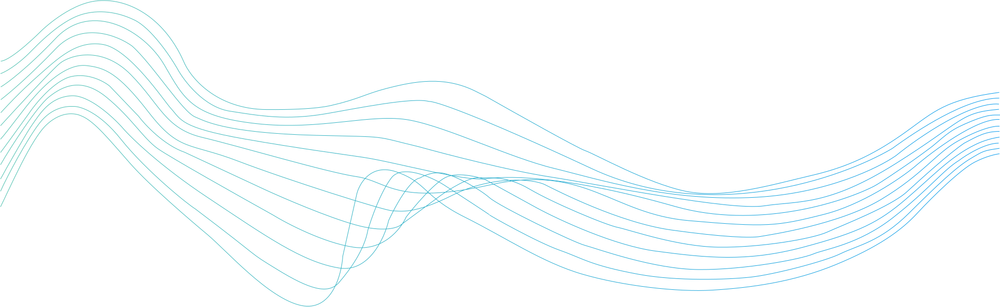

Stage de 3ème
J'ai réalisé un stage en 2019 dans la section maintenance informatique de l'entreprise Euralis (entreprise agroalimentaire)
Portfolio
Je m'appelle Loris Caruhel, j'ai 18 ans et je suis en 1ère année de BUT Informatique à l'IUT de Lannion. J'aimerais devenir développeur dans le futur voir même ingénieur en Informatique, à partir de la deuxième année de ce BUT je voudrais faire mon parcours en alternance.
Pour moi, devenir développeur représente bien plus qu'une simple carrière,
c'est une véritable passion. Depuis mon plus jeune âge, j'ai été fasciné
par le monde numérique et la manière dont les technologies peuvent transformer
notre quotidien. Devenir développeur me permet de donner vie à mes idées, de
résoudre des problèmes complexes et de contribuer à façonner l'avenir de la technologie.
Ce métier offre une infinité de possibilités de création et d'innovation. Chaque
ligne de code que j'écris est une occasion de créer quelque chose de nouveau,
d'utile et parfois même révolutionnaire. Il y a quelque chose de profondément
satisfaisant à voir un projet prendre forme sous mes doigts et à savoir qu'il
pourra potentiellement aider, simplifier ou améliorer la vie des autres.


Le BUT Informatique vise à former des professionnels polyvalents dotés de six compétences clés : la conception et le développement de solutions informatiques, la modélisation et la gestion des données, les systèmes et réseaux informatiques, le développement logiciel, savoir s'adapter aux technologies émergentes, ainsi que travailler en équipe.
Brevet des collèges
Collège François Lorant Moncontour
Réalisé en 2020
Mention : Très bien
Bac STI2D
Lycée Chaptal St Brieuc
Réalisé en 2023
Mention : Bien
Top 3 de la promo
BUT Informatique (en cours)
IUT Lannion
Commencé en 2023
Top 25/123 semestre 1
J'ai réalisé un stage en 2019 dans la section maintenance informatique de l'entreprise Euralis (entreprise agroalimentaire)